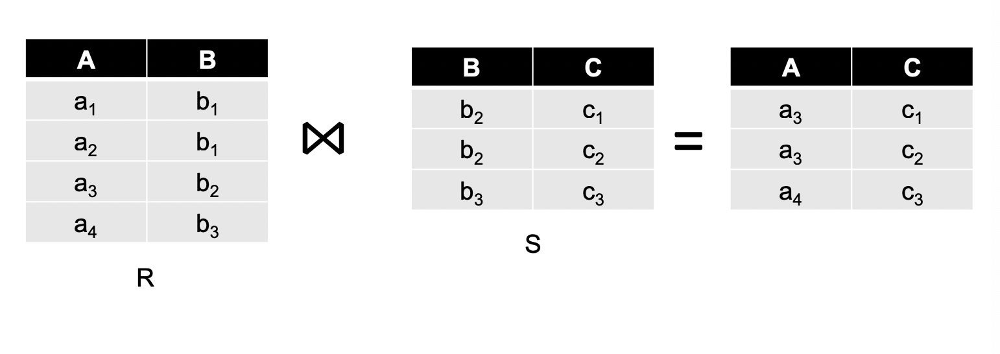
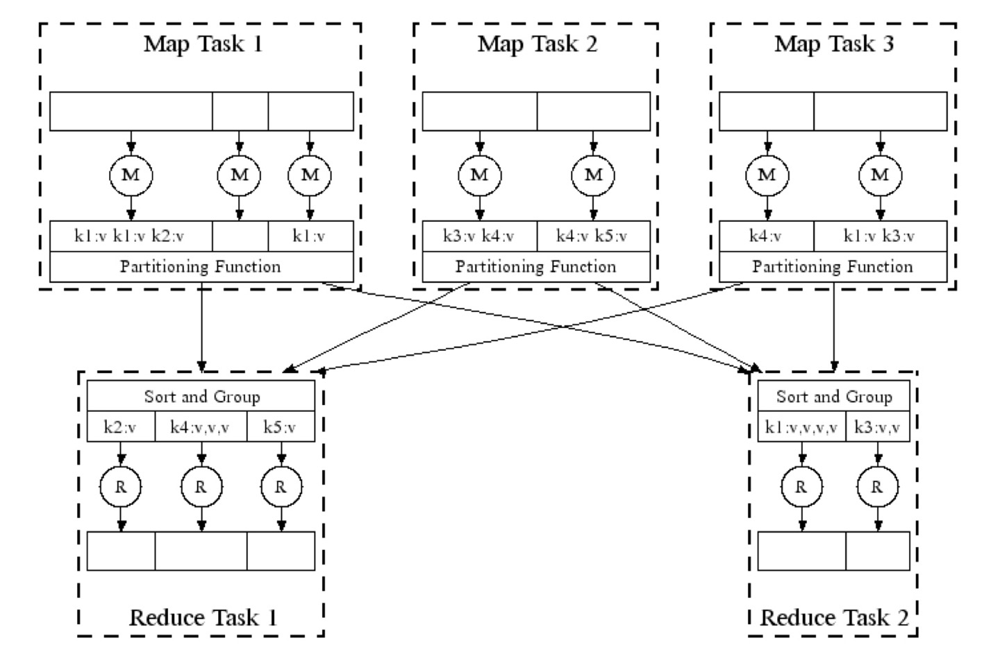

Big Data - MapReduce
Large Scale Computing for Data Mining
- Process a lot of data to produce other data
- Requirements
- CPU, Memory, HDD, …
- Multiple machine
Cluster Architecture
Fat-tree Architecture

- Mining big data requires large-scale computing whose key component is parallel programming
Basic Operation: MapReduce
- Created by Google (Jeffry Dean and Sanjay Chemawat) in 2004
- Inspired from LISP
- Map
- Applies the given function to each element of the set
- (map ‘length’(() (a) (a b) (a b c)) => (0 1 2 3)
- Reduce
- (reduce #’+’(1 2 3 4 5)) => 15
- Map
MapReduce is also Framework
- Apache Hadoop MapReduce, Amazon Elastic MapReduce
- Framework for parallel computing
- Parallelization
- Data distribution
- Load balancing
- Fault tolerance
- Programmers get simple API
- Allows one to process hug amount of data on thousands of processors
MapReduce as Programming Model
- Sample problem
- Find top 10URLs by access frequency by analyzing log files from web server(s)
- The problem can be converted as WordCount
- Counting words in a huge text document
WordCount
- Assume that a file is too large for memory, but all <word, count> pairs fit in memory
- load a part of the file - Map
- count word - Map
- merge - Reduce
- Each sub-task can be run in parallel
- Reduce not only the resource usage, but execution time
Generalize Formally
- Input: a set of key-value pairs
- 2 methods:
- Map(k, v) -> <k’, v’>*
- Reduce( k’, <v’>* ) -> <k’, v’’>*
MapReduce: A Logical Diagram

MapReduce: Environment
MapReduce environment takes care of the following:
- Partitioning the input data
- Scheduling the program’s execution across a set of machines
- Performing the group by key step
- Handling machine failures
- Managing required inter-machine communication
MapReduce: A Physical Diagram

Problems Suited for MapReduce
Host Size Example
- Suppose we have a large web corpus
- Look at the metadata file
- lines of the form: URL, size, date, …
- For each host, find the total of number of bytes
- sum of the page sizes for all URLs from the particular host
Language Model Example
- Statistical machine translation:
- need to count number of times every 5-word sequence occurs in a large corpus of documents
- Very easy with MapReduce:
- Map: extract(5-word sequence, count) from document
- Reduce: combine the counts
Join By MapReduce Example
- Compute the natural (a.k.a. inner) join
- R and S are each stored in files
- Tuples are pairs (a,b) or (b,c)

- Use a hash function h from B-values to 1…k
- A Map process turns:
- Each input tuple R(a,b) into key-value pair (b,(a,R))
- Each input tuple S(b,c) into (b,(c,S))
- Map processes send each key-value pair with key b to Reduce process h(b)
- Hadoop does this automatically; just tell it what k is.
- Each Reduce process matches all the pairs (b,(a,R)) with all (b,(c,S)) and outputs (a,b,c,).
Cost Measures for Algorithms
- In MapReduce we quantify the cost of an algorithm using
- Communication cost = total I/O of all processes
- Elapsed communication cost = max of I/O along any path
- (Elapsed) computation cost analogous, but count only running time of processes
Note that big-O notation is not the most useful, because adding more machine is always an option.
What Cost Measures Mean
- Either the I/O (communication) or processing (computation) cost dominates
- Ignore one or the other
- Total cost tells what you pay in rent from your friendly neighborhood cloud
- Elapsed cost is wall-clock time using parallelism
Design MapReduce Framework
Using MapReduce Framework
- Programmer specifies: Map and Reduce and input files
- Workflow:
- Read inputs as a set of key-value-pairs
- Map transforms input kv-pairs into a new set of k’v’-pairs
- Sorts & Shuffles the k’v’-pairs to output nodes
- All k’v’-pairs with a given k’ are sent to the same reduce
- Reduce processes all k’v’-pairs grouped by key into new k’‘v’‘-pairs
- Write the resulting pairs to files
- All phases are distributed with many tasks doing the work

Data Flow
- Input and final output are stored on a distributed file system(DFS):
- Scheduler tries to schedule map tasks “close” to physical storage location of input data
- Intermediate results are stored on local File System(FS) of Map and Reduce workers
- Output is often input to another MapReduce task
Map and Reduce job Example
For M map tasks and R reduce tasks
- Make M much larger than the number of nodes in the cluster
- One DFS chunk per map is common
- Improves dynamic load balancing and speeds up recovery from worker failures
Tip❗️
R is usually smaller than M, because the output is spread across R files.
Task Granularity & Pipelining
- Fine granularity tasks: map tasks > machines
- Minimizes time for fault recovery
- Able to pipeline shuffling with map execution
- Better dynamic load balancing

Coordination: Master
- Master node takes care of:
- Task status: (idle, in-progress, completed)
- Idle tasks get scheduled as workers become available
- Sends the master the location and sizes of its R intermediate files to reducer when a map task completes
- Pings workers periodically to detect failures
Dealing with Failures
- Map worker failure
- Map tasks completed or in-progress at worker are reset to idle
- Reduce workers are notified when task is rescheduled on an other worker
- Reduce worker failure
- Only in-progress tasks are reset to idle
- Reduce task is restarted
- Master failure
- mapReduce task is aborted and client is notified
Refinements: Backup Tasks
Problem
Slow workers significantly lengthen the job completion time:
- Other jobs on the machine
- Bad disks
- Unknown
Solution
Near end of phase, spawn backup copies of tasks. Whichever one finishes first “wins”.
Effect
Dramatically shortens jobs completion time.
Refinement: Combiners
- Often a Map task will produce many pairs of the form (k, v1), (k, v2), … for the same key k.
- e.g. popular words in the word count
- Save network time by pre-aggregating values in the mapper:
- combine(k, list(v1)) -> v2
- combiner is usually same as the reduce function
- Works only if reduce function is commutative and associative

If combiner combines the values of all keys of a single mapper(single machine), much less data will be copied and shuffled

Refinement: Partition Function
- Control how keys get partitioned
- Inputs to map tasks are created by contiguous split of input file
- Reduce needs to ensure that records with the same intermediate key end up at the same worker
- System uses a default partition function:
hash(key) mod(%) R
- It is useful to override the hash function:
- e.g.
hash(hostname(URL)) mod Rensures URLs from a host end up in the same output file
- e.g.
Storage Infrastructure
Problem If nodes fail, how can we store data persistently?
Answer Distributed File System
- Provides global file namespace
- Google GFS; Hadoop HDFS
Typical usage pattern
- Huge files(100s of GB to TB)
- Data is rarely updated in place
- Reads and appends are common
Distributed File System
- Reliable distributed file system
- Data kept in “chunks” spread across machines
- Each chunk replicated on different machines

Chunk servers
- File is split into contiguous chunks
- Typically each chunk is 16-64MB
- Each chunk replicated (usually 2x or 3x)
- Try to keep replicas in different racks
Master node
- a.k.a. name node in Hadoop’s HDFS
- Stores metadata about where files are stored
- Might be replicated
Client library for file access
- Talks to master to find chunk servers
- Connects directly chunk servers to access data
Reference
- Mining of Massive Datasets by Jure Leskovec, Anand Rajaraman, Jeff Ullman
- Introduction to Big Data Lecture by Daejin Choi in Incheon National University